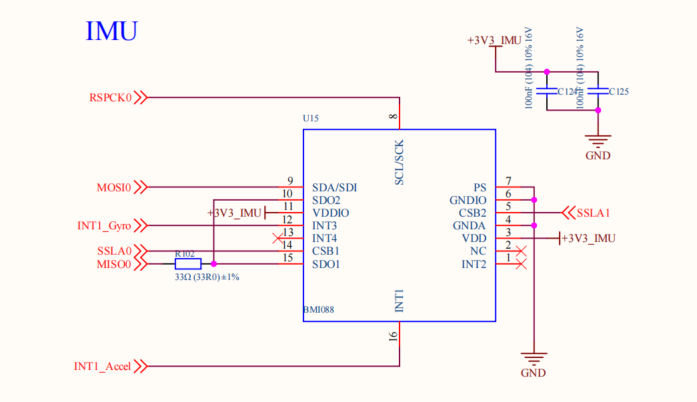
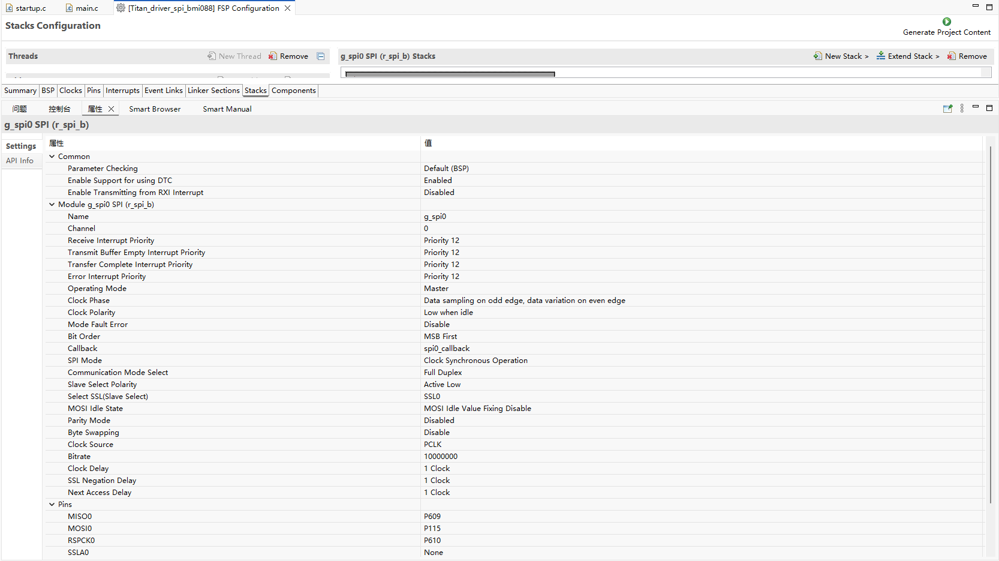
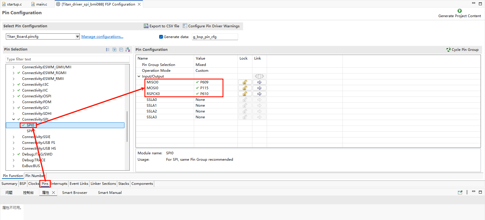
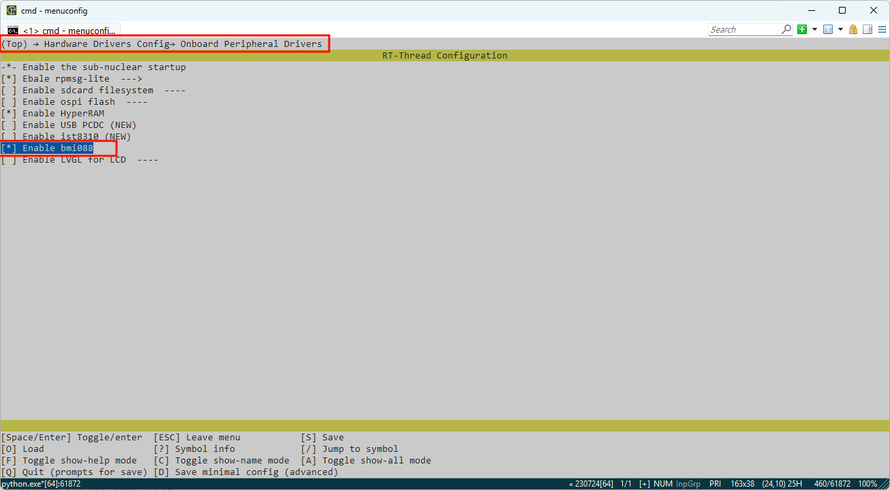
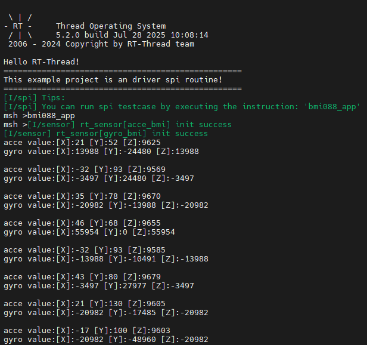

RA8P1 Titan Board BMI088 Gyroscope Usage Instructions
English | Chinese
Introduction
This routine focuses on how to communicate with the BMI088 gyroscope using the SPI framework of RT-Thread on the Titan Board.
Hardware Description
The Titan Board uses SPI0 to communicate with the BMI088 gyroscope.

FSP Configuration Instructions
Open the FSP tool, create a new stack, and select r_spi_b:

Configure SPI0 pins:

RT-Thread Settings Configuration
Open RT-Thread Settings to enable SPI0 and BMI088 packages:

Example Project Description
The bmi088 driver sample is located at ./packages/bmi088-latest/samples/bmi088_sample：
/*
* Copyright (c) 2006-2020, RT-Thread Development Team
*
* SPDX-License-Identifier: Apache-2.0
*
* Change Logs:
* Date Author Notes
* 2020-03-10 MyGuo the first version
*/
#include <rtthread.h>
#include <rtdbg.h>
#include "bmi088.h"
#include "sensor_intf_bmi088.h"
#include "drv_spi.h"
#include "bmi088_sample.h"
#define BMI088_BUS_NAME "spi0"
#define BMI088A_SPI_NAME "spi00"
#define BMI088G_SPI_NAME "spi01"
static rt_device_t acce_device_t;
static rt_device_t gyro_device_t;
struct rt_sensor_data acc_test;
struct rt_sensor_data gyr_test;
#define BMI088A_PIN BSP_IO_PORT_12_PIN_10
#define BMI088G_PIN BSP_IO_PORT_12_PIN_14
void imu_thread_entry(void* parameter)
{
// Configure spi, configure chip selection pin (before acc, gyr initialization, because device initialization involves pin operation)
rt_hw_spi_device_attach(BMI088_BUS_NAME, BMI088A_SPI_NAME, 0x060C);
rt_hw_spi_device_attach(BMI088_BUS_NAME, BMI088G_SPI_NAME, 0x0704);
// Registering sensors
struct rt_sensor_config acc_cfg = {0};
struct rt_sensor_config gyr_cfg = {0};
acc_cfg.intf.dev_name = BMI088A_SPI_NAME;
gyr_cfg.intf.dev_name = BMI088G_SPI_NAME;
rt_hw_bmi088_init("bmi", &acc_cfg, &gyr_cfg);
acce_device_t = rt_device_find("acce_bmi");
if (acce_device_t == RT_NULL)
{
LOG_E("Can't find acce device\r\n");
}
else
{
rt_device_open(acce_device_t, RT_DEVICE_OFLAG_RDWR);
}
gyro_device_t = rt_device_find("gyro_bmi");
if (gyro_device_t == RT_NULL)
{
LOG_E("Can't find gyro device\r\n");
}
else
{
rt_device_open(gyro_device_t, RT_DEVICE_OFLAG_RDWR);
}
while (1)
{
_bmi088_get_data((rt_sensor_t) acce_device_t, &acc_test);
_bmi088_get_data((rt_sensor_t) gyro_device_t, &gyr_test);
rt_kprintf("acce value:[X]:%d [Y]:%d [Z]:%d\n", acc_test.data.acce.x, acc_test.data.acce.y, acc_test.data.acce.z);
rt_kprintf("gyro value:[X]:%d [Y]:%d [Z]:%d\n\n", gyr_test.data.gyro.x, gyr_test.data.gyro.y, gyr_test.data.gyro.z);
rt_thread_mdelay(500);
}
}
void bmi088_app(void)
{
rt_thread_t bmi088 = rt_thread_create("bmi088", imu_thread_entry, RT_NULL, 2048, 25, 10);
if(bmi088 != RT_NULL)
{
rt_thread_startup(bmi088);
}
return;
}
MSH_CMD_EXPORT(bmi088_app, bmi088_app);
Compilation & Download
RT-Thread Studio: In RT-Thread Studio’s package manager, download the Titan Board resource package, create a new project, and compile it.
After compilation, connect the development board’s JLink interface to the PC and download the firmware to the development board.
Run Effect
Open the serial port tool and enter the bmi088_app command in the terminal to obtain the gyroscope data:
